Let
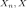
be random variables. Then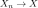
- almost surely if
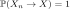
; - in probability if
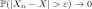
for every ;
; - in
 if
if 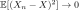
; - in distribution if
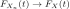
at every where
where
 is continuous.
is continuous.
Convergence in implies convergence in probability, and so does
almost sure convergence; convergence in probability implies convergence
in distribution. None of the implications reverses.
From : by Markov's inequality applied to
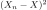
,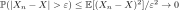
.
From almost sure convergence: fix and put
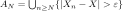
. The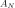
decrease, and their intersection is contained in the event that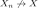
, which is null; by continuity from above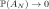
, and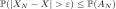
.
To distribution: let be a continuity point of and
. Then
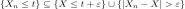
, so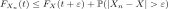
, and symmetrically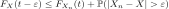
. Letting and then
and then  , continuity of at
squeezes
, continuity of at
squeezes 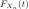
to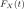
.Let
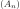
be events with , and let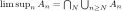
be the event that infinitely many occur. Then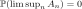
.
For every  , subadditivity gives
, subadditivity gives
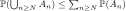
, which is the tail of a convergent series and so tends to . Since
. Since
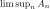
is contained in each of those unions, its probability is at most every tail, hence.
If the events are independent and
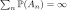
, then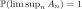
.Fix
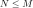
. By independence of the complements,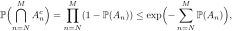
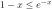
. The exponent tends to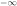
as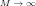
because the series diverges, so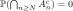
by continuity from above. Hence the union over of those events is null, and its complement –
which is – has probability  .
.
If for every ,
then almost surely.
Fix
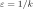
. By the first Borel-Cantelli lemma, almost surely only finitely many of the events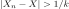
occur, so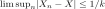
almost surely. Intersecting the countably many full-measure events over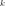
– a countable intersection of complements of null sets – gives almost surely.
The two lemmas together are a zero-one law: for independent events the
probability that infinitely many occur is or , decided by
whether a series converges. Independence is needed only for the second,
and it cannot be dropped there – repeating one event of probability
 gives a divergent sum and a limit superior of probability
.
gives a divergent sum and a limit superior of probability
.